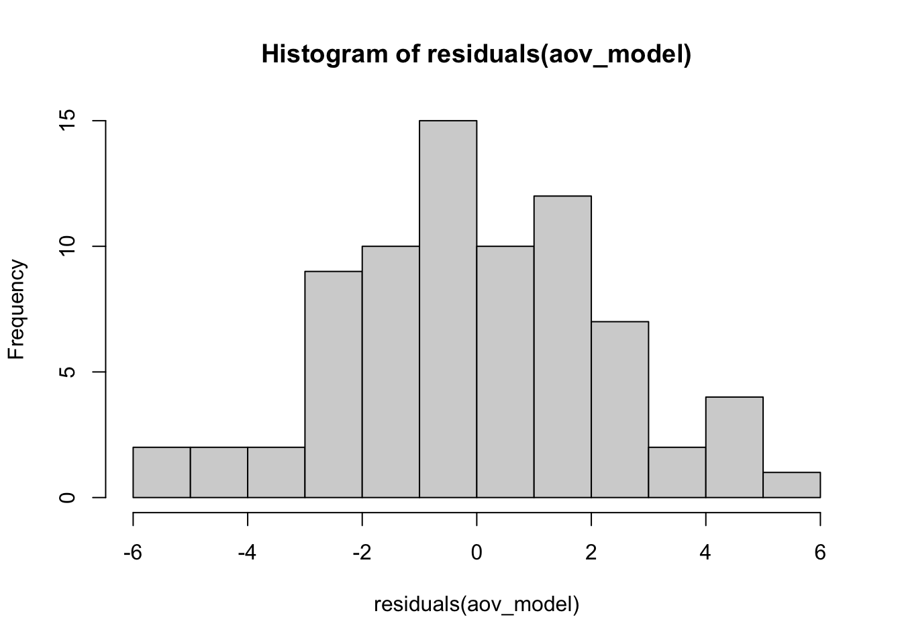
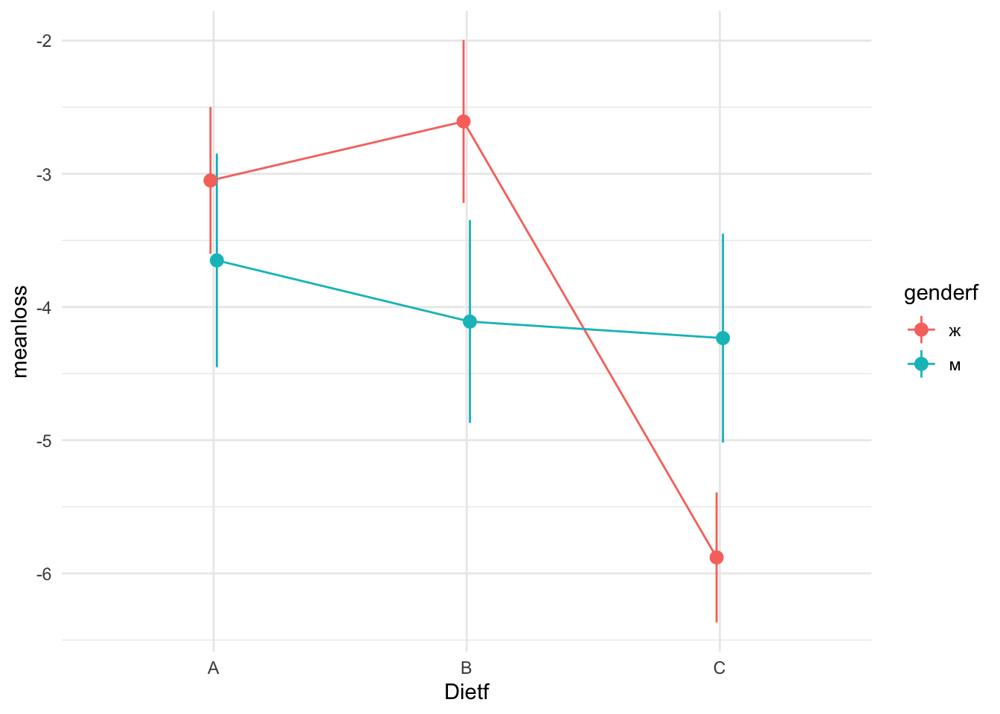

17 Дисперсионный анализ (ANOVA)
Дисперсионный анализ или ANOVA40 - один из самых распространенных методов статистического анализа в психологии, биологии, медицине и многих других дисциплинах. Дисперсионный анализ очень хорошо подходит для анализа данных, полученных в эксперименте - методе организации исследования, при котором исследователь напрямую управляет уровнями независимой переменной. Терминологическая связь между дисперсионным анализом и планированием эксперимента настолько тесная, что многие термины пересекаются, поэтому нужно быть осторожными. Как и в случае с линейной регрессией, если мы что-то называем “независимой переменной” (или “фактором”), это не порождает никакой каузальной связи.
Еще одна важная вещь, которую нужно понимать про дисперсионный анализ, это то, что у этого метода очень запутывающее название: из названия кажется, что этот статистический метод для сравнения дисперсий. Нет, это не так (хотя такие статистические тесты тоже есть, и они нам сегодня пригодятся - см. 17.5). Нет, это просто сравнение средних в случае, если есть больше, чем 2 группы для сравнения.
У дисперсионного анализа очень много разновидностей, для которых придумали множество названий. “Обычная” ANOVA называется One-Way ANOVA, она же межгрупповая ANOVA, это аналог независимого т-теста для нескольких групп.
Давайте начнем сразу с проведения теста. Мы будем использовать данные с курса по статистике Университета Шеффилда про эффективность диет, на которых мы разбирались с t-тестом (@ref(dep_ttest)).
library(tidyverse)
diet <- read_csv("data/stcp-Rdataset-Diet.csv")Сделаем небольшой препроцессинг данных. Создадим дополнительные “факторные” переменные, создадим переменную, в которой будет разница массы “до” и “после,” удалим NA.
diet <- diet %>%
mutate(weight.loss = weight6weeks - pre.weight,
Dietf = factor(Diet, labels = LETTERS[1:3]),
Person = factor(Person)) %>%
drop_na()17.0.1 Функция aov()
Попробуем сразу провести дисперсионных анализ с помощью функции aov():
aov_model <- aov(weight.loss ~ Dietf, diet)
aov_model## Call:
## aov(formula = weight.loss ~ Dietf, data = diet)
##
## Terms:
## Dietf Residuals
## Sum of Squares 60.5270 410.4018
## Deg. of Freedom 2 73
##
## Residual standard error: 2.371064
## Estimated effects may be unbalancedsummary(aov_model)## Df Sum Sq Mean Sq F value Pr(>F)
## Dietf 2 60.5 30.264 5.383 0.0066 **
## Residuals 73 410.4 5.622
## ---
## Signif. codes: 0 '***' 0.001 '**' 0.01 '*' 0.05 '.' 0.1 ' ' 1Мы получили что-то похожее на результат применения функции lm(). Правда, лаконичнее, но с новыми столбцами Sum Sq, Mean Sq и новой статистикой F вместо t. Что будет, если с теми же данными с той же формулой запустить lm() вместо aov()?
summary(lm(weight.loss ~ Dietf, diet))##
## Call:
## lm(formula = weight.loss ~ Dietf, data = diet)
##
## Residuals:
## Min 1Q Median 3Q Max
## -5.7000 -1.6519 -0.1759 1.4420 5.3680
##
## Coefficients:
## Estimate Std. Error t value Pr(>|t|)
## (Intercept) -3.3000 0.4840 -6.818 2.26e-09 ***
## DietfB 0.0320 0.6776 0.047 0.96246
## DietfC -1.8481 0.6652 -2.778 0.00694 **
## ---
## Signif. codes: 0 '***' 0.001 '**' 0.01 '*' 0.05 '.' 0.1 ' ' 1
##
## Residual standard error: 2.371 on 73 degrees of freedom
## Multiple R-squared: 0.1285, Adjusted R-squared: 0.1047
## F-statistic: 5.383 on 2 and 73 DF, p-value: 0.006596lm() превратил Dietf в две переменные, но F и p-value у двух моделей одинаковые! Кроме того, функция aov() является, по сути, просто “оберткой” над lm():
This provides a wrapper to lm for fitting linear models to balanced or unbalanced experimental designs.
17.1 Тестирование значимости нулевой гипотезы в ANOVA.
Как и в случае с другими статистическими тестами, мы можем выделить 4 этапа в тестировании значимости нулевой гипотезы в ANOVA:
- Формулирование нулевой и альтернативной гипотезы. Нулевая гипотеза говорит, что между средними в генеральной совокупности нет различий:
\[H_0:\mu_1 = \mu_2 = ... = \mu_n\] Можно было бы предположить, что ненулевая гипотеза звучит как “все средние не равны,” но вообще-то это не так. Альтернативная гипотеза в дисперсионном анализе звучит так:
\[H_1: \text{Не все средние равны}\]
- Подсчет статистики. Как мы уже видели раньше, в дисперсионном анализе используется новая для нас статистика F. Впрочем, мы ее видели, когда смотрели на аутпут функции
lm(), когда делали линейную регрессию. Чтобы считать F (если вдруг мы хотим сделать это вручную), нужно построить талбицу ANOVA (ANOVA table).
| Таблица ANOVA | Степени свободы | Суммы квадратов | Средние квадраты | F-статистика |
|---|---|---|---|---|
| Межгрупповые | \(df_{b}\) | \(SS_{b}\) | \(MS_{b} =\frac{SS_{b}}{df_{b}}\) | \(F=\frac{MS_{b}}{MS_{w}}\) |
| Внутригрупповые | \(df_{w}\) | \(SS_{w}\) | \(MS_{w} =\frac{SS_{w}}{df_{w}}\) | |
| Общие | \(df_{t}\) | \(SS_{t}= SS_{b} + SS_{w}\) |
Именно эту таблицу мы видели, когда использовали функцию aov():
summary(aov_model)## Df Sum Sq Mean Sq F value Pr(>F)
## Dietf 2 60.5 30.264 5.383 0.0066 **
## Residuals 73 410.4 5.622
## ---
## Signif. codes: 0 '***' 0.001 '**' 0.01 '*' 0.05 '.' 0.1 ' ' 1Вот как это все считается:
| Таблица ANOVA | Степени свободы | Суммы квадратов | Средние квадраты | F-статистика |
|---|---|---|---|---|
| Между | \(df_{b}=J-1\) | \(SS_{b}= \sum\limits_{j=1}^J \sum\limits_{i=1}^{n_j} (\overline{x_j}-\overline{x})^2\) | \(MS_{b} =\frac{SS_{b}}{df_{b}}\) | \(F=\frac{MS_{b}}{MS_{w}}\) |
| Внутри | \(df_{w}=N-J\) | \(SS_{w}= \sum\limits_{j=1}^J \sum\limits_{i=1}^{n_j} (x_{ij}-\overline{x_j})^2\) | \(MS_{w} =\frac{SS_{w}}{df_{w}}\) | |
| Общие | \(df_{t}=N-1\) | \(SS_{t}= \sum\limits_{j=1}^J \sum\limits_{i=1}^{n_j} (x_{ij}-\overline{x})^2\) |
\(J\) означает количество групп, \(N\) - общее количество наблюдений во всех группах, \(n_j\) означает количество наблюдений в группе j, а \(x_{ij}\) - наблюдение под номером \(i\) в группе \(j\).
Вариабельность обозначается \(SS\) и означает “сумму квадратов” (sum of squares) - это то же, что и дисперсия, только мы не делим вме в конце на количество наблюдений (или количество наблюдений минус один): \[SS = \sum\limits_{i=1}^{n_j} (x_{i}-\overline{x})^2\]
Здесь много формул, но суть довольно простая: мы разделяем вариабельность зависимой переменной на внутригрупповую и межгрупповую, считаем их соотношение, которое и будет F. В среднем, F будет равен 1 при верности нулевой гипотезы. Это означает, что и межгрупповая вариабельность, и внутригрупповая вариабельность - это просто шум. Но если же межгрупповая вариабельность - это не просто шум, то это соотношение будет сильно больше единицы.
- Подсчет p-value. В t-тесте мы смотрели, как статистика распределена при условии верности нулевой гипотезы. То есть что будет, если нулевая гипотеза верна, мы будем повторять эксперимент с точно таким же дизайном (и размером выборок) бесконечное количество раз и считать F.
betweendf <- 2
withindf <- 73
f <- summary(aov_model)[[1]]$F[1]
v <- seq(0.1,10, 0.01)
fdist <- data.frame(fvalues = v, pdf = df(v, betweendf, withindf))
library(ggplot2)
label <- paste0("F(", betweendf, ", ", withindf, ") = ", round(f, 3))
ggplot(fdist, aes(x = fvalues, y = pdf))+
geom_line()+
geom_vline(xintercept = f)+
annotate("text", x = f+1, y = 0.2, label = label)+
scale_y_continuous(expand=c(0,0)) +
theme_minimal()+
theme(axis.line.y = element_blank(),
axis.ticks.y = element_blank(),
axis.text.y = element_blank(),
axis.title.y = element_blank()) Рисунок 17.1: F-распределение при верности нулевой гипотезы (см. детали в тексте)
Заметьте, распределение F несимметричное41. Это значит, что мы всегда считаем считаем площадь от F до плюс бесконечности (без умножения на 2, как мы это делали в t-тесте):
1 - pf(f, betweendf, withindf)## [1] 0.006595853Это и есть наш p-value!
- Сравнение p-value с уровнем \(\alpha\). Самый простой этап: если наш p-value меньше, чем \(\alpha\) (который обычно равен 0.05), то мы отвергаем нулевую гипотезу. Если нет - не отвергаем.
В нашем случае это 0.0065959, что, очевидно, меньше, чем 0.05. Отвергаем нулевую гипотезу (о том, что нет различий), принимаем ненулевую (о том, что различия есть). Все!
17.2 Post-hoc тесты
Тем не менее, дисперсионного анализа недостаточно, чтобы решить, какие именно группы между собой различаются. Для этого нужно проводить post-hoc тесты (апостериорные тесты).
Post-hoc переводится с латыни как “после этого.” Post-hoc тесты или просто “пост-хоки” проводятся, если в результате ANOVA была отвергнута нулевая гипотеза. Собственно, пост-хоки никак не связаны с дисперсионным анализом на уровне расчетов - это абсолютно независимые тесты, но исторически так сложилось, что они известны именно как дополнительный этап ANOVA.
Самый простой вариант пост-хок теста - это попарные т-тесты42 с поправками на множественные сравнения:
pairwise.t.test(diet$weight.loss, diet$Dietf)##
## Pairwise comparisons using t tests with pooled SD
##
## data: diet$weight.loss and diet$Dietf
##
## A B
## B 0.962 -
## C 0.017 0.017
##
## P value adjustment method: holmВторой подход связан с использованием специализированных тестов, таких как тест Тьюки (Tukey Honest Significant Differences = Tukey HSD). Для этого в R есть функция TukeyHSD(), которую нужно применять на объект aov:
TukeyHSD(aov_model)## Tukey multiple comparisons of means
## 95% family-wise confidence level
##
## Fit: aov(formula = weight.loss ~ Dietf, data = diet)
##
## $Dietf
## diff lwr upr p adj
## B-A 0.032000 -1.589085 1.6530850 0.9987711
## C-A -1.848148 -3.439554 -0.2567422 0.0188047
## C-B -1.880148 -3.454614 -0.3056826 0.015202017.3 ANOVA и т-тест как частные случаи линейной регрессии
Как мы уже видели, если применить lm() или aov() на одних и тех же данных с одной и той же формулой, то результат будет очень похожим. Но есть одно но: lm() создает из одного фактора две переменных-предиктора:
summary(lm(weight.loss ~ Dietf, diet))##
## Call:
## lm(formula = weight.loss ~ Dietf, data = diet)
##
## Residuals:
## Min 1Q Median 3Q Max
## -5.7000 -1.6519 -0.1759 1.4420 5.3680
##
## Coefficients:
## Estimate Std. Error t value Pr(>|t|)
## (Intercept) -3.3000 0.4840 -6.818 2.26e-09 ***
## DietfB 0.0320 0.6776 0.047 0.96246
## DietfC -1.8481 0.6652 -2.778 0.00694 **
## ---
## Signif. codes: 0 '***' 0.001 '**' 0.01 '*' 0.05 '.' 0.1 ' ' 1
##
## Residual standard error: 2.371 on 73 degrees of freedom
## Multiple R-squared: 0.1285, Adjusted R-squared: 0.1047
## F-statistic: 5.383 on 2 and 73 DF, p-value: 0.006596Дело в том, что мы не можем просто так загнать номинативную переменную в качестве предиктора в линейную регрессию. Мы можем это легко сделать, если у нас всего два уровня в номинативном предикторе. Тогда один из уровней можно обозначить за 0, другой - за 1. Такие переменные иногда называются “бинарными.” Тогда это легко использовать в линейной регрессии:
summary(lm(weight.loss ~ gender, diet))##
## Call:
## lm(formula = weight.loss ~ gender, data = diet)
##
## Residuals:
## Min 1Q Median 3Q Max
## -5.1848 -1.7264 0.2041 1.6846 5.9930
##
## Coefficients:
## Estimate Std. Error t value Pr(>|t|)
## (Intercept) -3.8930 0.3846 -10.123 1.3e-15 ***
## gender -0.1221 0.5836 -0.209 0.835
## ---
## Signif. codes: 0 '***' 0.001 '**' 0.01 '*' 0.05 '.' 0.1 ' ' 1
##
## Residual standard error: 2.522 on 74 degrees of freedom
## Multiple R-squared: 0.0005914, Adjusted R-squared: -0.01291
## F-statistic: 0.04379 on 1 and 74 DF, p-value: 0.8348Можно ли так делать? Вполне! Допущения линейной регрессии касаются остатков, а не переменных самих по себе. Разве что это немного избыточно: линейная регрессия с бинарным предиктором - это фактически независимый t-тест:
t.test(weight.loss ~ gender, diet, var.equal = TRUE)##
## Two Sample t-test
##
## data: weight.loss by gender
## t = 0.20925, df = 74, p-value = 0.8348
## alternative hypothesis: true difference in means is not equal to 0
## 95 percent confidence interval:
## -1.040810 1.285067
## sample estimates:
## mean in group 0 mean in group 1
## -3.893023 -4.015152Как видите, p-value совпадают! А t статистика в квадрате - это F (при двух группах):
t.test(weight.loss ~ gender, diet, var.equal = TRUE)$statistic^2## t
## 0.04378592Более того, те же самые результаты можно получить и с помощью коэффициента корреляции Пирсона:
cor.test(diet$gender, diet$weight.loss)##
## Pearson's product-moment correlation
##
## data: diet$gender and diet$weight.loss
## t = -0.20925, df = 74, p-value = 0.8348
## alternative hypothesis: true correlation is not equal to 0
## 95 percent confidence interval:
## -0.2484113 0.2022466
## sample estimates:
## cor
## -0.02431772Теперь должно быть понятно, почему все эти функции делают вроде бы разные статистические тесты, но выдают такой похожий результат - это фактически один и тот же метод! Все эти методы (и некоторые из тех, что будем рассматривать далее) можно рассматривать как разновидности множественной линейной регрессии.43
17.4 Dummy coding
Тем не менее, вопрос остается открытым: как превратить номинативную переменную в количественную и загнать ее в регрессию? Для этого можно использовать “фиктивное кодирование” (dummy coding):
diet <- diet %>%
mutate(isA = as.numeric(Dietf == "A"),
isB = as.numeric(Dietf == "B"),
isC = as.numeric(Dietf == "C"))
diet %>%
group_by(Dietf) %>%
slice(1:2) %>%
select(Dietf, isA:isC)Заметьте, что такое кодирование избыточно. Если мы знаем, что диет 3, а данная диета - это не диета В и не диета С, то это диета А. Значит, одна из созданных нами колонок - “лишняя”:
diet$isA <- NULLИспользуем новую колонки для линейной регрессии и сравним результаты:
summary(lm(weight.loss ~ isB + isC, diet))##
## Call:
## lm(formula = weight.loss ~ isB + isC, data = diet)
##
## Residuals:
## Min 1Q Median 3Q Max
## -5.7000 -1.6519 -0.1759 1.4420 5.3680
##
## Coefficients:
## Estimate Std. Error t value Pr(>|t|)
## (Intercept) -3.3000 0.4840 -6.818 2.26e-09 ***
## isB 0.0320 0.6776 0.047 0.96246
## isC -1.8481 0.6652 -2.778 0.00694 **
## ---
## Signif. codes: 0 '***' 0.001 '**' 0.01 '*' 0.05 '.' 0.1 ' ' 1
##
## Residual standard error: 2.371 on 73 degrees of freedom
## Multiple R-squared: 0.1285, Adjusted R-squared: 0.1047
## F-statistic: 5.383 on 2 and 73 DF, p-value: 0.006596summary(lm(weight.loss ~ Dietf, diet))##
## Call:
## lm(formula = weight.loss ~ Dietf, data = diet)
##
## Residuals:
## Min 1Q Median 3Q Max
## -5.7000 -1.6519 -0.1759 1.4420 5.3680
##
## Coefficients:
## Estimate Std. Error t value Pr(>|t|)
## (Intercept) -3.3000 0.4840 -6.818 2.26e-09 ***
## DietfB 0.0320 0.6776 0.047 0.96246
## DietfC -1.8481 0.6652 -2.778 0.00694 **
## ---
## Signif. codes: 0 '***' 0.001 '**' 0.01 '*' 0.05 '.' 0.1 ' ' 1
##
## Residual standard error: 2.371 on 73 degrees of freedom
## Multiple R-squared: 0.1285, Adjusted R-squared: 0.1047
## F-statistic: 5.383 on 2 and 73 DF, p-value: 0.006596То же самое!
17.5 Допущения ANOVA
- Нормальность распределения ошибок:
hist(residuals(aov_model))
Как мы видим, распределение не сильно далеко от нормального - этого вполне достаточно. ANOVA - это метод достаточно устойчивый к отклонениям от нормальности.
- Гомогенность дисперсий.
То есть их равенство. Можно посмотреть на распределение остатков:
diet$residuals <- residuals(aov_model)
ggplot(diet, aes(x = Dietf, y = residuals))+ geom_jitter(width = 0.1, alpha = 0.5)
Все выглядит неплохо: нет какой-то одной группы, у которой разброс сильно больше или меньше. Есть и более формальные способы проверить равенство дисперсий. Например, с помощью теста Ливиня (Levene’s test). Для того, чтобы его провести, мы воспользуемся новым пакетом ez (читать как “easy”). Этот пакет сильно упрощает проведение дисперсионного анализа, особенно для более сложных дизайнов.
install.packages("ez")Синтаксис довольно простой: нужно указать, данные, зависимую переменную, переменную с ID, факторы. Необходимо прописать фактор в between = или within =. В данном случае - в between =.
library(ez)
ez_model <- ezANOVA(data = diet,
dv= weight.loss,
wid = Person,
between = Dietf,
detailed = T,
return_aov = T)
ez_model## $ANOVA
## Effect DFn DFd SSn SSd F p p<.05 ges
## 1 Dietf 2 73 60.52701 410.4018 5.383104 0.006595853 * 0.1285269
##
## $`Levene's Test for Homogeneity of Variance`
## DFn DFd SSn SSd F p p<.05
## 1 2 73 2.040419 160.8859 0.4629076 0.6312856
##
## $aov
## Call:
## aov(formula = formula(aov_formula), data = data)
##
## Terms:
## Dietf Residuals
## Sum of Squares 60.5270 410.4018
## Deg. of Freedom 2 73
##
## Residual standard error: 2.371064
## Estimated effects may be unbalancedЕсли при проведении теста Ливиня мы получаем p < .05, то мы отбрасываем нулевую гипотезу о равенстве дисперсий. В данном случае мы не можем ее отбросить и поэтому принимаем44
Полученный объект (если поставить return_aov = T) содержит еще и объект aov() - на случай, если у Вас есть функции, которые работают с этим классом:
TukeyHSD(ez_model$aov)## Tukey multiple comparisons of means
## 95% family-wise confidence level
##
## Fit: aov(formula = formula(aov_formula), data = data)
##
## $Dietf
## diff lwr upr p adj
## B-A 0.032000 -1.589085 1.6530850 0.9987711
## C-A -1.848148 -3.439554 -0.2567422 0.0188047
## C-B -1.880148 -3.454614 -0.3056826 0.0152020- Примерно одинаковое количество испытуемых в разных группах. Здесь у нас все в порядке:
diet %>%
count(Dietf)Небольшие различия в размерах групп - это ОК, тем более, что на практике такое очень часто случается: кого-то пришлось выкинуть из анализа, для какой-то строчки были потеряны данные и т.д. Однако больших различий в размерах групп стоит избегать. Самое плохое, когда группы различаются значительно по размеру (более чем в 2 раза) и вариабельность внутри групп отличается значительно (более чем в 2 раза).
17.6 Многофакторный дисперсионный анализ (Factorial ANOVA)
На практике можно встретить One-Way ANOVA (однофакторную ANOVA) довольно редко. Обычно в исследованиях встречается многофакторный дисперсионный анализ, в котором проверяется влияние сразу нескольких факторов. В научных статьях это обозначается примерно так: “3х2 ANOVA.” Это означает, что был проведен двухфакторный дисперсионный анализ, причем в одном факторе было три уровня, во втором - два. В нашем случае это будут факторы “Диета” и “Пол.” Это означает, что у нас две гипотезы: о влиянии диеты на потерю веса и о влиянии пола на потерю веса. Кроме того, появляется гипотеза о взаимодействии факторов - то есть о том, что разные диеты по разному влияют на потерю веса для разных полов.
Взаимодействие двух факторов хорошо видно на графике с линиями: если две линии параллельны, то взаимодействия нет. Если они не параллельны (пересекаются, сходятся, расходятся), то взаимодействие есть.
diet <- diet %>%
mutate(genderf = factor(gender, labels = c("ж", "м"))) #превращаем в бинарную переменную в фактор
sem <- function(x) sd(x)/sqrt(length(x)) #пишем функцию для стандартной ошибки
pd = position_dodge(0.05) #немного раздвигаем положение точек на будущем графике
diet %>%
group_by(Dietf, genderf) %>%
summarise(meanloss = mean(weight.loss),
se = sem(weight.loss)) %>%
ggplot(aes(x = Dietf,
y = meanloss,
colour = genderf)) +
geom_line(aes(group = genderf), position = pd) +
geom_pointrange(aes(ymin = meanloss - se,
ymax = meanloss + se), position = pd) +
theme_minimal()
Как видно по картинке, разница в эффективности диеты С по сравнению с другими видна только для женщин.
ezANOVA(data = diet,
dv= weight.loss,
wid = Person,
between = .(Dietf, gender),
detailed = T,
return_aov = T)## $ANOVA
## Effect DFn DFd SSn SSd F p p<.05
## 1 Dietf 2 70 60.4172197 376.329 5.61902602 0.00545568 *
## 2 gender 1 70 0.1686958 376.329 0.03137868 0.85990976
## 3 Dietf:gender 2 70 33.9040683 376.329 3.15320438 0.04884228 *
## ges
## 1 0.138334829
## 2 0.000448066
## 3 0.082645860
##
## $aov
## Call:
## aov(formula = formula(aov_formula), data = data)
##
## Terms:
## Dietf gender Dietf:gender Residuals
## Sum of Squares 60.5270 0.1687 33.9041 376.3290
## Deg. of Freedom 2 1 2 70
##
## Residual standard error: 2.318648
## Estimated effects may be unbalancedИтак, теперь мы проверяем три гипотезы вместо одной. Действительно, взаимодействие диеты и пола оказалось значимым, как и ожидалось.
17.7 Дисперсионный анализ с повторными измерениями (Repeated-measures ANOVA)
Если обычный дисперсионный анализ - это аналог независимого т-теста для нескольких групп, то дисперсионный анализ с повторными измерениями - это аналог зависимого т-теста. В функции ezANOVA() для проведения дисперсионного анализа с повторными измерениями нужно просто поставить нужным параметром внутригрупповую переменную. Это означает, что в данном случае мы должны иметь данные в длинном формате, для чего мы воспользуемся функцией pivot_longer():
dietlong <- diet %>%
pivot_longer(cols = c(pre.weight, weight6weeks),
names_to = "time",
values_to = "weight")
dietlongC <- dietlong %>%
filter(Dietf == "C") %>%
droplevels()ezANOVA(dietlongC,
dv = weight,
wid = Person,
within = time)## $ANOVA
## Effect DFn DFd F p p<.05 ges
## 2 time 1 26 124.6949 2.030459e-11 * 0.098603617.8 Смешанный дисперсионный анализ (Mixed between-within subjects ANOVA)
Нам никто не мешает совмещать и внутригруппоdые, и межгрупповые факторы вместе. В ezANOVA() это делается просто с помощью прописывания разных факторов в нужных переменных: between = и within =.
ezANOVA(dietlong,
dv = weight,
wid = Person,
within = time,
between = Dietf)## $ANOVA
## Effect DFn DFd F p p<.05 ges
## 2 Dietf 2 73 0.8280758 4.409507e-01 0.021710057
## 3 time 1 73 210.5004045 3.346036e-23 * 0.059209996
## 4 Dietf:time 2 73 5.3831045 6.595853e-03 * 0.003208607Здесь нас интересует взаимодействие между факторами. Результаты, полученные для этой гипотезы, идентичны результатам по обычному дисперсионному анализу на разницу до и после - по сути это одно и то же.
17.9 Непараметрические аналоги ANOVA
Как было описано выше, ANOVA довольно устойчив к разным отклонениям от нормальности и некоторой гетероскедастичности (разным дисперсиям в выборках). Но если уж у Вас данные ну совсем-совсем ненормальные, несимметричные, а от преобразований шкалы Вы по каким-то причинам отказались, то стоит упомянуть о непараметрических аналогах ANOVA.
17.9.1 Тест Краскела-Уоллеса
Это тест Краскела-Уоллеса - обобщение теста Манна-Уитни на несколько выборок (т.е. аналог межгруппового ANOVA):
kruskal.test(weight.loss ~ Dietf, diet)##
## Kruskal-Wallis rank sum test
##
## data: weight.loss by Dietf
## Kruskal-Wallis chi-squared = 9.4159, df = 2, p-value = 0.00902317.9.2 Тест Фридмана
Для зависимых выборок есть тест Фридмана - непараметрический аналог дисперсионного анализа с повторными измерениями:
friedman.test(weight ~ time | Person, dietlongC)##
## Friedman rank sum test
##
## data: weight and time and Person
## Friedman chi-squared = 27, df = 1, p-value = 2.035e-0717.10 Заключение
Мы разобрали много разных вариантов дисперсионного анализа. Зачем так много? ANOVA - один из самых распространенных методов как в психологии, так и во многих других областях. Естественно, это отнюдь не все методы, используемые в той же психологии. Более того, некоторые вопросы остались за бортом. Постараюсь коротко их перечислить:
многомерный ANOVA (Multivariate ANalysis Of Variance; MANOVA) - расширение ANOVA для ситуации нескольких зависимых переменных. Это довольно редкая разновидность ANOVA, который берет во внимание ковариации между зависимыми переменными.
тестирование сферичности для дисперсионного анализа с повторноми измерениями с помощью теста сферичности Моучли (Mauchly’s sphericity test). Этот тест проверяет использует матрицу ковариаций разниц каждого условия с каждым: дисперсии разниц между условиями должны быть примерно одинаковыми. Если нулевая гипотеза о сферичности может быть отброшена (p-value < \(\alpha\)), то нужно проводить специальные поправки, обычно это поправки Гринхауса-Гейсера (Greenhouse-Geisser corrections). Мы этого не делали, потому что в ситуации RM-ANOVA с всего двумя условиями эта сферичность никогда не нарушается: у нас всего одна дисперсия разниц между условиями, которую просто-напросто не с чем сравнивать. Тест сферичности Моучли вместе с поправками Гринхауса-Гейсера проводятся автоматически для RM-ANOVA с тремя или более группами при использовании функции
ezANOVA(), так что особо париться над этим не стоит. Правда, нужно помнить, что как и все подобные статистические тесты допущений, они обладают проблемами, связанными с тем, что это статистические тесты: на маленьких выборках они не заметят даже серьезных отклонений от сферичности, на больших - даже маленькие отклонения, а \(p-value < 0.05\), по сути, не может интерпретироваться как верность нулевой гипотезы. Тем не менее, это довольно стандартная процедура.Как правильно репортить результаты дисперсионного анализа. Здесь все, конечно, зависит от стиля, используемого конкретным журналом. В психологии и близких к ней дисциплинам фактическим lingua franca является стиль Американской Психологической Ассоциации (APA). И тут у меня есть для Вас хорошие новости: есть куча пакетов в R, которые позволяют репортить результаты статистических тестов в APA-стиле! Спасибо дотошным авторам руководства APA по офромлению статей, что этот стиль настолько точно прописывает, как нужно описывать результаты исследований, что это можно запрограммировать. Я лично пользуюсь пакетом
apa, он весьма удобен:
install.packages("apa")library(apa)
anova_apa(ez_model, format = "rmarkdown")## Dietf: *F*(2, 73) = 5.38, *p* = .007, $\eta^2_p$ = .13В тексте это будет выглядеть это будет вот так:
Dietf: F(2, 73) = 5.38, p = .007, \(\eta^2_p\) = .13
Еще есть пакеты apaStyle и papaja, которые могут даже сразу делать весь документ в APA-формате! Если же Вы описываете результаты самостоятельно вручную, то нужно помнить: ни в коем случае не описывайте только p-value. Обязательно прописывайте значение \(F\) и степени свободы, желательно с размером эффекта. Для post-hoc теста часто репортятся только p-value (зачастую только для статистически значимых сравнений), но обязательно нужно прописывать какие именно post-hoc тесты проводились, какой показатель размера эффекта использовался (если использовался), применялись ли тест сферичности Моучли вместе с поправками Гринхауса-Гейсера для дисперсионного анализа с повторными измерениями.
- Модели со смешанными эффектами (mixed-effects models) / иерархическая регрессия (hierarchical regression) / многоуровневое моделирование (multilevel modelling). очень популярный нынче метод, которому повезло иметь много названий - в зависимости от области, в которой он используется. В экспериментальной психологии обычно он называется “модели со смешанными эффектами” и позволяет включать в линейную регрессию не только фиксированные эффекты (fixed effects), но и случайные эффекты (random effects). Для экспериментальной психологии это интересно тем, что в таких моделях можно не усреднять показатели по испытуемым, а учитывать влияние группирующей переменной “испытуемый” как случайный эффект. Подобные модели используются в самых разных областях. Для их использования в R есть два известных пакета:
nlmeиlme4.
ANOVA от ANalysis Of VAriance, по-русски часто читается как “АНОВА.”↩︎
Форма F-распределения будет сильно зависеть от числа степеней свободы. Но оно всегда определено от 0 до плюс бесконечности: в числителе и знаменателе всегда неотрицательные числа.↩︎
По умолчанию функция
pairwise.t.test()использует объединенное стандартное отклонение для всех условий при расчетах. Это дает немного другие результаты, чем просто попарные t-тесты, хотя разница обычно незначительная. Чтобы отключить такое поведение функцииpairwise.t.test(), можно поставитьFALSEдля параметраpool.sd()↩︎Обобщением множественной линейной регрессии (вернее, одним из) можно считать общую линейную модель (general linear model). Общая линейная модель может предсказывать не одну, а сразу несколько объясняемых переменных в отличие от множественной линейной регрессии. Следующим этапом обобщения служит обобщенная линейная модель (generalized linear model). Фишка последней в том, что можно использовать не только модели с нормально распределенными остатками, но и, например, логистическую и пуассоновскую регрессию.↩︎
Вообще-то эта логика не совсем корректна. Тест Ливиня - это такой же статистический тест, как и остальные. Поэтому считать, что допущения соблюдаются на основании того, что p-value больше допустимого уровня \(\alpha\), - это неправильно. Но для проверки допущений такая не очень корректная практика считается допустимой.↩︎